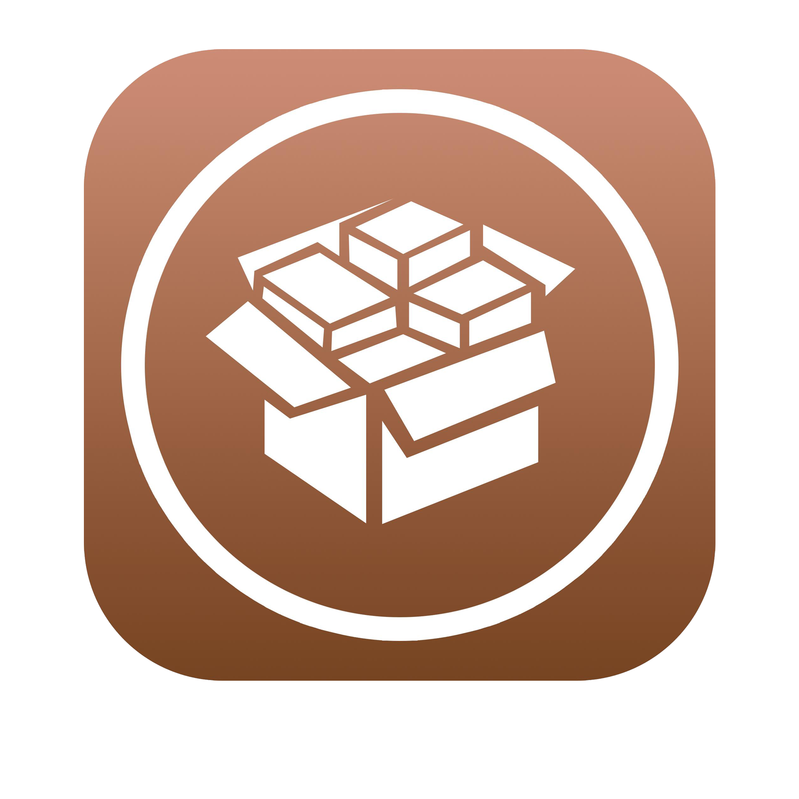

Welkom op mijn homepagina!

Waarom ik gekozen heb voor ict:
Ik ben van jongs af aan al erg geïnteresseerd in computers.
Toen ik klein was en mijn vader een ipad had, speelde ik vooral games zoals Clash of Clans en minecraft.
Later wanneer ik ongeveer 14 jaar oud was introduceerde mijn neef me aan Cydia, dit vond ik erg fascinered.
Hierdoor wilde ik steeds meer te weten komen en leren over computers, er zijn zo veel mogelijkheden.
Waarom ben ik geschikt voor deze opleiding:
Ik ben geschikt voor ICT omdat technische dingen mij liggen, ook ben ik erg leergierig en wil ik alles begrijpen over dit vak.
Mijn droom is later een baan in de CyberSecurity.